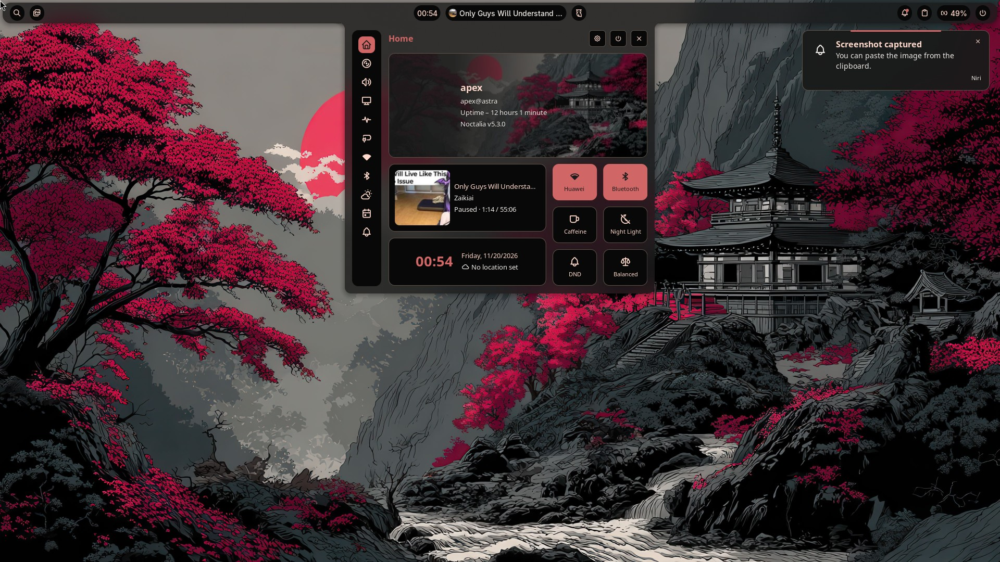
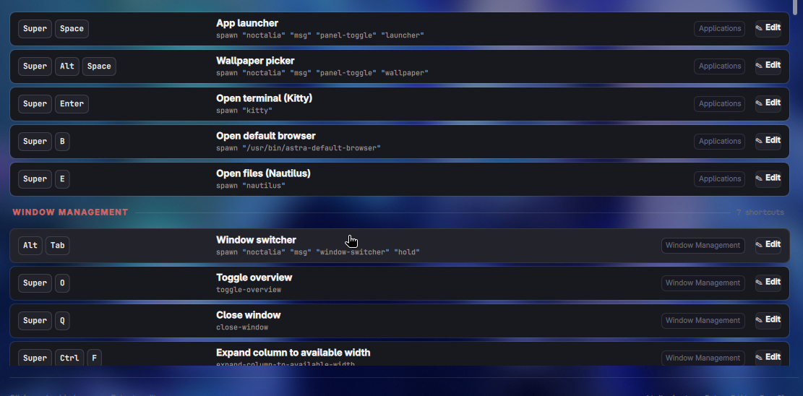

The Curated Wayland Desktop
For Power Users & Developers
Transform any standard Arch Linux installation into a coherent, high-performance desktop environment pairing Niri’s scrollable tiling with the Noctalia 5 shell, native keybind editing, and zero-risk bootloader synchronization.

Crafted for Focus and Flow
Every component in Eva Linux v2 is curated to produce a quiet, responsive, and reliable workstation.
Niri Infinite Tiling
A scrollable-tiling Wayland window manager built on the concept of an infinite horizontal ribbon. Preset column widths (33%, 50%, 66%) keep your workflow organized without microscopic window shrinking.
Noctalia 5 Shell
Features a floating capsule top bar, interactive media widgets, integrated workspace overview, and a unified control center for quick toggles, brightness, and audio devices.
Zero-Risk Wallpaper Sync
Changing your wallpaper in Noctalia automatically synchronizes the background of SilentSDDM and HyperFluent GRUB. GRUB background updates directly in place without executing risky grub-mkconfig rebuilds.
Kitty & LazyVim
Pre-seeded GPU terminal with background blur, JetBrains Mono font, and Noctalia palette synchronization. Neovim is configured out-of-the-box with LazyVim, Treesitter, and LSP tooling.
SilentSDDM & Plymouth
Pure upstream SilentSDDM login greeter with layout preservation, paired with a two-step Plymouth boot splash and the fluent HyperFluent bootloader theme.
Backup & Restoration
Every installation automatically creates a timestamped archive of your existing configurations with a manifest. Run eva-restore at any point to roll back in seconds.
Never Memorize Shortcuts Again.
Press Super + Shift + / anywhere in your session to reveal the native Wayland cheatsheet overlay.
- Live Keyboard Capture: Click "Edit" and press keys directly on your keyboard to assign shortcuts.
- Collision Resolution: Built-in conflict detection offers instant Replace or Swap modes.
- Sandbox Validation: Automatically validates syntax against
niri validatebefore applying, with instantaneous rollback on error. - Frosted Glass Aesthetic: Hardware-accelerated background blur matching your wallpaper tone.

Essential Default Shortcuts
| Shortcut | Action | Description |
|---|---|---|
| Super + Shift + / | Keybind Cheatsheet | Toggle the interactive shortcut overlay & editor |
| Super + Space | Application Launcher | Open Noctalia search and application menu |
| Super + Alt + Space | Wallpaper Picker | Open Noctalia wallpaper selector (auto-syncs to boot & login) |
| Super + Enter | Terminal | Spawn Kitty GPU terminal with active theme |
| Super + B | Web Browser | Launch default web browser |
| Super + E | File Manager | Open Nautilus file explorer |
| Region Screenshot | Interactive area capture to clipboard & ~/Pictures/Screenshots |
|
| Ctrl + Print | Full Screenshot | Capture entire display |
Simple & Safe Installation
Designed to run idempotently on top of any standard Arch Linux system.
Start with Base Arch Linux
Install standard Arch Linux or boot into an existing Arch installation. Ensure your user has sudo permissions and an active network connection.
Run the Installer
Execute the bootstrap command or clone the git repository manually:
Interactive Hardware & Preferences Selection
The installer will detect your GPU (AMD, Intel, NVIDIA) and prompt you for preferred browser, AUR helper (yay or paru), and optional Eva AI Chatbot.
Reboot & Enjoy
Log in through SilentSDDM into your brand new Niri session. All configurations, keybindings, and wallpaper synchronizations are immediately active.
Built Upon Open Source Craft
Eva Linux relies on the generous work of upstream authors: YaLixDee (Niri), Clement Fombonne (Noctalia), outfoxxed (Quickshell), uiriansan (SilentSDDM), Coopydood (HyperFluent), and folke (LazyVim).
View Component Catalog & Attribution